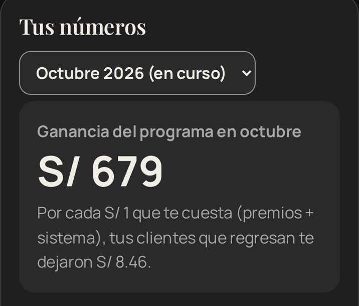
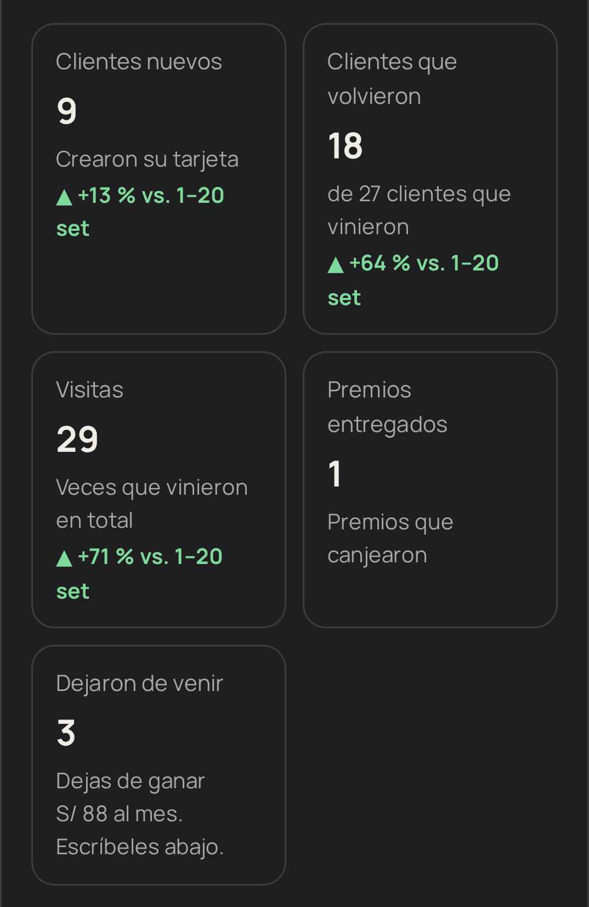
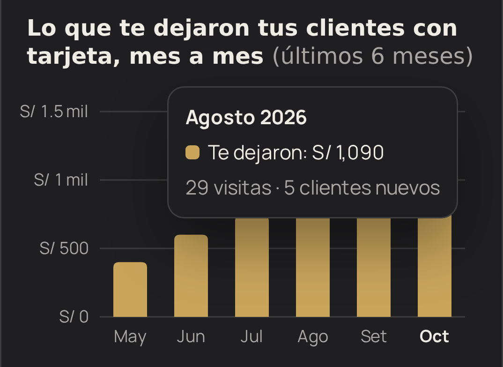
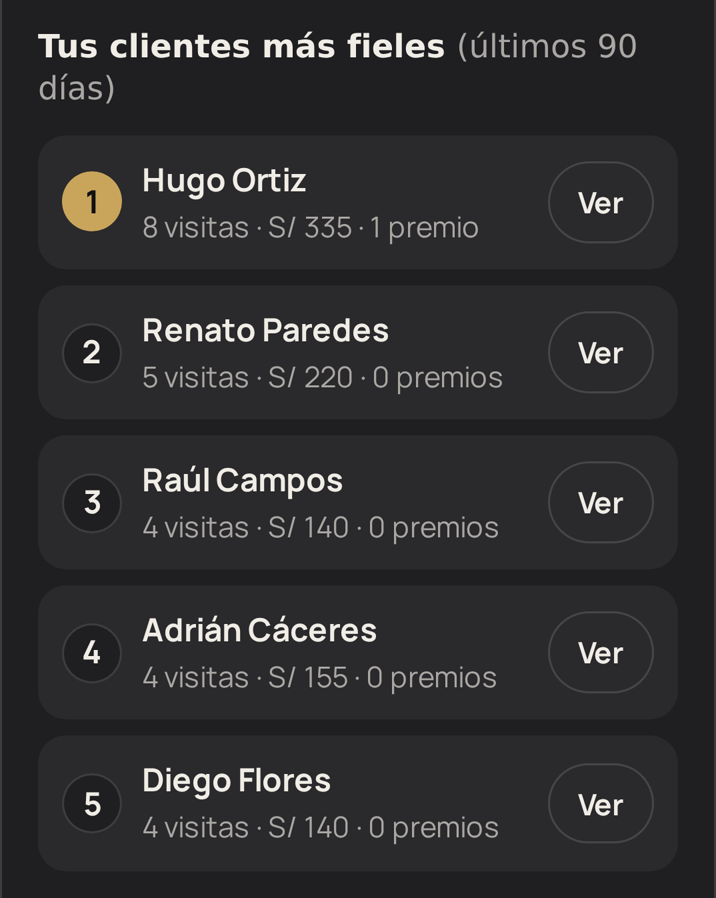
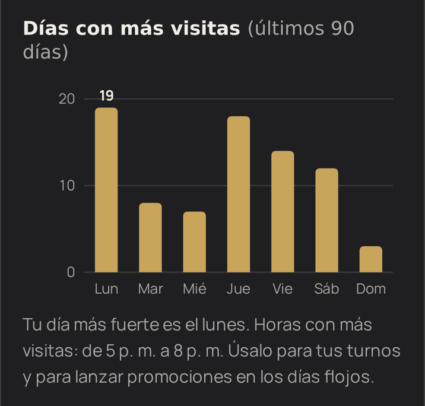
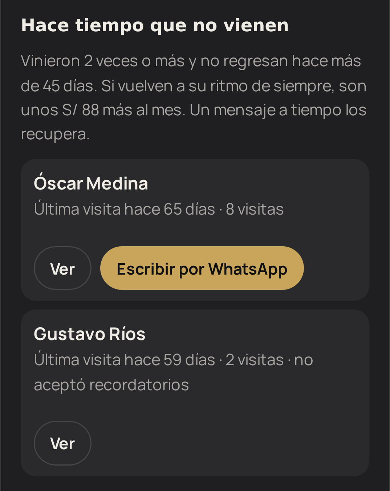

Guion de venta · Resumen
El orden para ir directo con el dueño del negocio, en persona o por videollamada. Cada paso tiene su guion en las páginas siguientes. Cambia lo que está entre [corchetes].
Pregunta cuántos clientes atiende, cuánto cobra en promedio y si hace algo para que vuelvan. Sus respuestas son tus números para el paso 4.
Hoy no sabe quién es su cliente fiel, a quién perdió ni cuánto le deja cada uno. Las tarjetas de papel se pierden y nadie avisa al cliente que está por ganar.
Su cliente escanea el QR del mostrador y crea su tarjeta en 20 segundos. En cada visita, él le suma un sello desde su celular. Su panel le dice a quién escribir por WhatsApp para que vuelva.
Lo que más vende: cuánto ganó con los clientes que regresan, cuánto le vuelve por cada sol invertido, las comparaciones con el mes anterior, el gráfico de 6 meses, el ranking de sus mejores clientes, sus días y horas fuertes y quiénes dejaron de venir.
Su tarjeta con su marca, la página de registro con sus redes, el cartel QR, su panel con escáner y «Tus números», mensajes por WhatsApp y un informe cada mes.
Un solo precio mensual, de S/ 59 a S/ 79 según la zona y el tamaño del local (lo decides antes de ir). Sin pago inicial y con el primer mes gratis.
Su logo, el premio («10 cortes = 1 gratis»), sus redes, su WhatsApp, su precio promedio y la fecha para empezar.
En 48 horas le entregas su panel, su cartel QR y su enlace para la bio. La primera semana lo acompañas. Cada mes le mandas su informe por WhatsApp desde tu administración: es lo que hace que renueve.
«Te ayudo a que tus clientes vuelvan más seguido, y cada mes ves en tu celular cuánto te dejaron y a quién tienes que escribirle.»
Paso 5 · Lo que recibe
Paso 4 · Lo que más vende
Muéstralo en tu celular, con la demo abierta. Señala cada parte y di la frase de la derecha. Las capturas son de un negocio de ejemplo.

Le dices: «Este es el número que más te va a importar: lo que te dejaron este mes los clientes que regresaron, ya descontando los premios y lo que pagas por el sistema. Y aquí abajo ves cuánto te vuelve por cada sol que inviertes.»
Cómo se calcula: cuenta las visitas desde la 2.ª de cada cliente, al precio que él cobra. Si anota lo cobrado en cada visita, usa ese monto exacto.

Le dices: «Cada dato te dice si vas mejor o peor que el mes pasado: ingresos, cuántos volvieron, cuántos clientes nuevos, cuántos premios diste y cuánto te costaron. Si es el mes en curso, se compara con el mes pasado a la misma fecha, para que sea justo.»
Remata con: «Y aquí ves qué porcentaje de tus clientes vuelve y cada cuántos días regresan. Si vuelven cada 36 días y tú logras que sea cada 28, son casi 3 visitas más al año por cliente.»

Le dices: «La barra dorada es lo que te dejan los clientes que regresan; la gris, lo que te cuesta el programa. Tocas un mes y te sale el detalle con la ganancia. Así ves de un vistazo si vale la pena.»
Paso 4 · Lo que más vende

Le dices: «Estos son tus 10 mejores clientes de los últimos 3 meses: cuántas veces vinieron y cuánto te dejaron. A ellos los cuidas: un saludo, un detalle en su cumpleaños, que se sientan VIP.»
Le dices: «Aquí ves tu día más fuerte y tus horas pico. Te sirve para organizar los turnos de tus barberos y para lanzar promociones justo en los días flojos.»


Le dices: «Esta es la lista que te ahorra plata: clientes que venían seguido y hace más de 45 días que no aparecen. Con un toque les escribes por WhatsApp con el mensaje ya listo. Recuperar a un cliente cuesta mucho menos que conseguir uno nuevo.»
Importante: el botón de WhatsApp solo aparece si el cliente aceptó recibir mensajes. Así el negocio cumple la ley de datos personales.
«Hoy todo eso lo tienes en la cabeza o no lo sabes. Con esto lo ves en tu celular, todos los meses, sin hacer ninguna cuenta.»
En persona o por videollamada
Ve en horas tranquilas, con la demo abierta en tu celular. Habla poco y pregunta mucho.
Si duda: no insistas. Ofrece armarle una muestra con su nombre: «Te la mando mañana y decides con eso». Una muestra con su marca vende más que cualquier argumento.
Pasos 6 a 8
Menos la cuota (de S/ 59 a S/ 79) y 2 premios (unos S/ 24 de costo real): le quedan entre S/ 597 y S/ 617, unos S/ 6 a S/ 7 por cada S/ 1. Es un ejemplo: usa los números que te dé el dueño en el paso 1.
| S/ 59 | Barrio popular o local chico: 1 o 2 sillas, poca gente al día. |
| S/ 69 | Zona media o local con movimiento: 3 o 4 sillas. |
| S/ 79 | Zona comercial o local grande: 5 sillas o más, mucha gente. |
Decide antes de ir y di un solo número: «para tu local son S/ 69». No le muestres la tabla.
| Te dicen | Respondes |
|---|---|
| «¿Y si igual iban a volver?» | Algunos sí; por eso el panel lo llama estimación. Lo que sí verás es si tus visitas suben frente a antes, y a quién recuperas con un mensaje. |
| «No tengo tiempo para anotar montos» | No hace falta: si no anotas nada, se usa tu precio promedio. Anotarlo es opcional. |
| «Está caro» | Con 2 o 3 clientes que vuelvan una vez más al mes ya se paga. No hay pago inicial y el primer mes es gratis: lo pruebas sin arriesgar nada. |
| «¿Mis datos están seguros?» | Solo tú los ves con tu clave. Se pide nombre y celular con aviso de privacidad, según la ley peruana. |
Desde tu panel de administración, en «Rendimiento de tus negocios», toca Enviar por WhatsApp. Le llega su resumen: visitas, comparación con el mes pasado, ganancia, retorno y clientes que dejaron de venir. Envíalo cada mes y, sobre todo, una semana antes de cobrar la renovación.